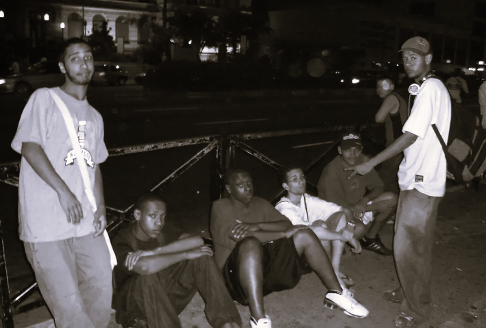

InfoRimas
Batalhas de rima são competições de rap em que MCs se enfrentam, se atacando e respondendo com versos improvisados (freestyle). O vencedor é decidido pela plateia ou por jurados, que avaliam as rimas.

Em meados da década de 1980, com a popularização do Hip Hop no Brasil, surgiram espaços para praticar seus elementos, como break, graffiti e rap. Nesses locais, MCs começaram a improvisar e disputar rimas.
Nos anos 2000, as batalhas de rima ficaram mais organizadas e populares, principalmente com a Batalha do Santa Cruz, em São Paulo.
Faça login no site para acessar as novidades e tendências da cena das batalhas de rima, com destaque para campeões e eventos.
O site também conta com conteúdos didáticos sobre rimas, além de uma seção de treino dinâmico.